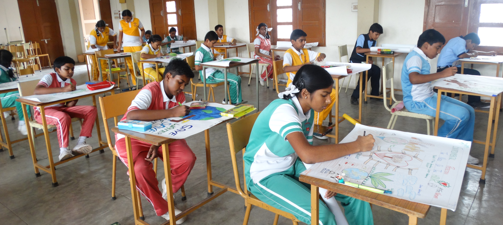

Our School

My school is very supportive.
St.Theresa High School(ICSE) Arul Colony (Co-Education) is a Roman Catholic, Minority Institution
established by the Society of the Sisters of St.Ann,
Luzern (SAL) on 15th June 1992.The Society of St.Ann
was
founded
by Fr.Wilhelm Meyer at Luzern in Switzerland in the year 1909.
The School prepares the students for the
Indian
Certificate of Secondary Education (ICSE) Examination,
through English Medium.
The school aims at providing holistic education to all the students.
Campus life
My school is very creative.
My school life has been an amazing journey so far. I started my education in a small primary school and
then
moved on to a bigger secondary school.
Throughout my school life, I have been fortunate enough to have
experienced a positive and supportive learning environment.
I have made many great friends, learned
valuable
lessons and developed my passion for learning.
My school life has not just been about
studying and getting good grades, it has also been about
extracurricular
activities and sports. I have been a member of the school's debate club, music club and basketball team.
Participating in these activities has not only helped me to build my skills and confidence, but it has
also allowed me to meet new people and form new relationships.
SCHOOL ACHIEVEMENTS

GOT SECOND RANK IN DEBATE COMPETITION
Debate is a process that involves formal discourse, discussion, and oral addresses on a particular topic or collection of topics, often with a moderator and an audience. In a debate, arguments are put forward for common opposing viewpoints. Debates have historically occurred in public meetings, academic institutions, debate halls, coffeehouses, competitions, and legislative assemblies.Debates have also been conducted for educational and recreational purposes.The term "debate" may also be applied to a more continuous, inclusive and less formalized process through which issues are explored and resolved across a range of agencies and among the general public: for example the European Commission in 2021 published a Green Paper on Ageing intended to generate such a debate on "policies to address the challenges and opportunities of ageing" in forthcoming years, and Pope Francis refers to "the need for forthright and honest debate" on society and the environment in his 2015 encyclical letter Laudato si'.
GOT THIRD RANK IN DEBATE COMPETITION
Sports develop the physical as well as mental strength in students. Daily physical exercise is essential for students because exercise not only helps students to stay healthy, but it also helps to improve their emotional fitness. Sports should be a major part of the school curriculum because if students stay emotionally and physically healthy, they can easily focus on their studies. Students have to participate in school sports to increase confidence, mental alertness, and self-esteem. Sports are important in schools because it helps to teach various skills to students like leadership, patience, patience, team efforts, and social skills. Here we are discussing some benefits of the importance of sports in Schools.
GOT FIRST RANK IN SCIENCE EXHIBITION
Science exhibitions are events or displays organized by schools, science centers, institutions, government agencies, or private organizations. The main purpose of these exhibitions is to educate and engage students and individuals by showcasing and explaining concepts, discoveries, innovations, and experiments. They aim to enhance people’s understanding of the world and the scientific method while sparking curiosity and promoting science literacy. Owing to the importance of these exhibitions, JBM Global – one of the best schools in Sector 132 Noida organizes science exhibitions at regular intervals. We also encourage every student to participate in these exhibitions to ignite curiosity in them. These help them excel in scientific concepts and get a better understanding of science-related topics.
What's New
The objective of this Institution is to prepare future citizens who would think and work for the Motherland with a spirit of dedication, irrespective of their differences in caste, creed or religion. It expects the child to turn out to be a person of God and good character from whom knowledge, high principles, culture and refinement will overflow to the society in which he/she lives. Holistic development of our students with sound intellectual,physical,psychologocal,emotional and moral maturity that will pave the way for a truly democratic, secular and equitable social order.

Contact Us
ST.THERESA HIGH SCHOOL
SAL (ICSE), NEW DELHI
ARUL COLONY,ECIL POST.,
HYDERABAD-500 062
PHONE:040-27124329
E-MAIL:sttheresahyd@gmail.com
Website:www.sal-sths.in